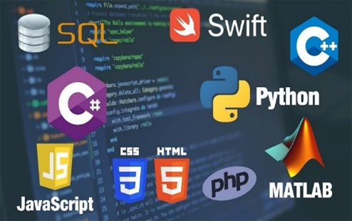

Lenguajes de Programacion más usados
[regresar]
 El tamaño del mercado de los lenguajes de programación se valoró en 154.680 millones de dólares en 2021 y se espera que alcance los 343.840 millones de dólares en 2029, con una CAGR del 10,5% durante el periodo de previsión.
El lenguaje de programación de software más popular, en todo el mundo, en 2022 fue CSS, con una cuota de mercado del 42%. Otros lenguajes de programación destacados son ASP.NET, Lua y PHP, según Statista.
Como la creación de software ha aumentado, los lenguajes de programación han tenido que modernizarse y adaptarse a las nuevas necesidades de los programadores. Desde lenguajes que se utilizan solo para un sistema operativo, hasta aquellos que son fáciles y sencillos en el manejo. La diversificación de los lenguajes ha provocado que muchos de ellos sean considerados como las bases de la futura programación y sean indispensables a la hora de desarrollar un software.
La revista española “Expansión” indaga en el futuro y señala que la inteligencia artificial hará que los nuevos profesionales de programación se encarguen del negocio y de la experiencia del cliente. Asimismo, la digitalización y la automatización traen consigo el tener que especializarse en los lenguajes que más aplicaciones y demanda van a tener en el futuro de la programación
Python
Python es un lenguaje de programación que han adoptado desarrolladores de todo el mundo por su versatilidad de uso. Es un lenguaje muy potente en la actualidad, por lo que se utiliza mucho para el aprendizaje automático y el análisis de datos. Está en auge y se le augura un futuro muy prometedor.
Java
Lenguaje fundamental del sistema operativo Android, presente en un porcentaje muy elevado de dispositivos inteligentes (tablets, teléfonos móviles, relojes e incluso Página 8 televisores). Este lenguaje de programación es uno de los mejores, y entre sus adeptos se encuentran: Facebook, Amazon y el videojuego Minecraft.
Java Script
Es el lenguaje de programación de desarrollo web más extendido. Se utiliza en el diseño de todas las páginas web modernas y cada vez gana más popularidad gracias al enorme crecimiento del mercado de los dispositivos móviles como smartphones, tablets, etc.
C++
Es un lenguaje muy potente que se mantiene en las cotas más altas de la programación. El motivo central es su gran polivalencia, ya que sirve para desarrollar todo tipo de software desde drivers, videojuegos hasta firmwares, entre otros.

 PHP
PHP